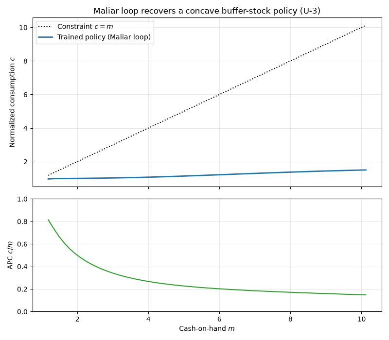

Note
Go to the end to download the full example code.
The Maliar Training Loop on a Model With No Closed-Form Solution¶
The companion example trains a network on a fixed grid and checks it against
a closed-form policy. This one runs the full Maliar, Maliar, and Winant (2021)
algorithm, maliar_training_loop(), on a model that
has no closed-form solution: Carroll’s buffer-stock consumption problem
(benchmark U-3). Solving such models is the reason the neural-network method
exists, so it is the honest setting in which to show the algorithm at work.
What the Maliar algorithm adds over plain gradient descent¶
A neural Bellman/Euler solver has three separable ingredients. The first two
already appear in train_block_nn():
an all-in-one expectation operator: the conditional expectation \(\mathbb{E}[\,\cdot\,]\) in the optimality condition is evaluated with two independent shock copies per state, so their product is an unbiased estimate of the squared residual (squaring a single noisy draw would bias it upward);
stochastic gradient descent on the resulting residual loss.
The Maliar loop adds the third:
an outer loop over the state distribution. After each block of SGD updates it simulates the model forward under the current policy and uses the states it lands on as the next training grid. Training therefore concentrates where the agent actually spends time (its ergodic set) rather than on an arbitrary fixed grid.
maliar_training_loop()alternatesepochs_per_iterationinner SGD steps with one such forward simulation, for up tomax_iterationsrounds or until the policy stops moving.
The model: buffer-stock saving (U-3)¶
U-3 is the normalized buffer-stock problem (Carroll 1992, 1997): CRRA utility
with risk aversion \(\gamma = 2\), permanent and transitory income shocks,
and a borrowing constraint \(c \le m\). In ratios to permanent income the
arrival state is normalized assets \(a\), cash-on-hand is
\(m = R a / \psi + \theta\) for gross return \(R\), and the control is
normalized consumption \(c\). See skagent.models.benchmarks for the block definition and
calibration.
The constraint and income risk interact, so there is no closed-form policy. We instead validate the trained policy against two properties that buffer-stock theory guarantees: consumption never exceeds cash-on-hand (\(0 < c \le m\)), and the agent consumes a shrinking share of its resources as wealth rises, so the average propensity to consume \(c / m\) falls (precautionary saving weakens as a buffer accumulates).
import matplotlib.pyplot as plt
import numpy as np
import torch
import skagent.algos.maliar as maliar
import skagent.bellman as bellman
import skagent.grid as grid
import skagent.loss as loss
from skagent.ann import device
from skagent.models.benchmarks import (
get_benchmark_calibration,
get_benchmark_model,
)
SEED = 10077693
Step 1: Load the U-3 buffer-stock model and build a BellmanPeriod¶
construct_shocks draws the income-shock support that the all-in-one
expectation operator samples from during training.
u3_block = get_benchmark_model("U-3")
u3_calibration = get_benchmark_calibration("U-3")
rng = np.random.default_rng(SEED)
u3_block.construct_shocks(u3_calibration, rng=rng)
bp = bellman.BellmanPeriod(u3_block, "DiscFac", u3_calibration)
Step 2: Define the Euler-equation loss with the borrowing constraint¶
constrained=True replaces the hard complementarity condition of the
borrowing constraint with the smooth Fischer-Burmeister equation (Maliar et
al. 2021, eq. 25), which the control’s upper_bound (\(c \le m\))
supplies. The loss is policy-only here, so a plain
BlockPolicyNet is trained internally by the loop.
euler_loss_fn = loss.EulerEquationLoss(bp, parameters=u3_calibration, constrained=True)
Step 3: Run the Maliar training loop¶
The initial grid only seeds the first iteration; simulation_steps forward
draws then move the training states toward the ergodic set each round.
shock_copies=2 gives each training state a current-period shock draw and
one next-period draw; the all-in-one operator’s second, independent
next-period draw is generated inside the loss. Their product is an unbiased
estimate of the squared expected residual, avoiding the upward bias of
squaring a single draw.
states_0 = grid.Grid.from_config({"a": {"min": 0.1, "max": 4.0, "count": 200}})
trained_net, final_states = maliar.maliar_training_loop(
bp,
euler_loss_fn,
states_0,
u3_calibration,
shock_copies=2,
max_iterations=40,
tolerance=1e-6,
random_seed=SEED,
simulation_steps=1,
network_width=32,
)
Step 4: Evaluate the trained consumption function¶
We read the policy over the ergodic set of assets the loop actually trained on, holding the income shocks at their mean (\(\psi = \theta = 1\)) so the slice is deterministic. Then we check the two buffer-stock properties.
decision_fn = trained_net.get_decision_function()
# Evaluate over the ergodic set the loop trained on (the assets the simulated
# agent visits), not a fixed grid: extrapolating past it shows an artifactual,
# untrained downward bend in consumption at high wealth.
n_test = 60
ergodic_a = final_states["a"].detach().to(device)
test_a = torch.linspace(
float(ergodic_a.min()), float(ergodic_a.max()), n_test, device=device
)
mean_shocks = {
"psi": torch.ones(n_test, device=device),
"theta": torch.ones(n_test, device=device),
}
c = decision_fn({"a": test_a}, mean_shocks, u3_calibration)["c"].detach()
R = u3_calibration["R"]
m = R * test_a / mean_shocks["psi"] + mean_shocks["theta"]
# Property 1: the borrowing constraint 0 < c <= m holds everywhere, up to
# the 1e-6 numerical tolerance on the upper bound (the sigmoid-based
# bounding can approach but never exactly reach m).
respects_constraint = bool(torch.all(c > 0) and torch.all(c <= m + 1e-6))
# Property 2: the average propensity to consume c / m falls as the buffer
# grows. The ratio is robust (no differentiation of the network output) and,
# for a concave policy above the constraint, monotone: near the constraint the
# agent consumes nearly all of its resources, and it consumes a shrinking share
# once a buffer accumulates. Compare the lowest-wealth tenth of the grid to the
# highest.
apc = c / m
tenth = max(1, n_test // 10)
apc_low = apc[:tenth].mean().item()
apc_high = apc[-tenth:].mean().item()
print(f"Trained over {final_states.n()} ergodic-set states in the final round.")
print(f"Borrowing constraint 0 < c <= m holds on the test grid: {respects_constraint}")
print(f"APC c/m near the constraint: {apc_low:.2f}")
print(f"APC c/m at high wealth: {apc_high:.2f}")
print(f"APC falls as the buffer grows (buffer-stock signature): {apc_high < apc_low}")
Trained over 200 ergodic-set states in the final round.
Borrowing constraint 0 < c <= m holds on the test grid: True
APC c/m near the constraint: 0.75
APC c/m at high wealth: 0.45
APC falls as the buffer grows (buffer-stock signature): True
Step 5: Plot the trained policy and its APC¶
The upper panel shows consumption against cash-on-hand, with the 45-degree line \(c = m\) marking the borrowing constraint. Over the ergodic set the agent holds a precautionary buffer, so consumption stays strictly below the constraint (the gap to \(c = m\) is that buffer) and rises concavely. The lower panel shows the average propensity to consume \(c / m\) falling as wealth grows.
m_np = m.cpu().numpy()
c_np = c.cpu().numpy()
apc_np = apc.cpu().numpy()
fig, (ax_policy, ax_apc) = plt.subplots(
2, 1, figsize=(8, 7), sharex=True, height_ratios=[3, 2]
)
ax_policy.plot(m_np, m_np, "k:", linewidth=1.5, label="Constraint $c = m$")
ax_policy.plot(m_np, c_np, "C0-", linewidth=2, label="Trained policy (Maliar loop)")
ax_policy.set_ylabel("Normalized consumption $c$")
ax_policy.set_title("Maliar loop recovers a concave buffer-stock policy (U-3)")
ax_policy.legend()
ax_policy.grid(True, alpha=0.3)
ax_apc.plot(m_np, apc_np, "C2-", linewidth=1.5)
ax_apc.set_xlabel("Cash-on-hand $m$")
ax_apc.set_ylabel("APC $c / m$")
ax_apc.set_ylim(0.0, 1.0)
ax_apc.grid(True, alpha=0.3)
fig.tight_layout()
plt.show()

Total running time of the script: (0 minutes 53.016 seconds)